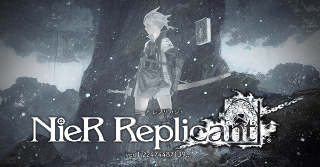

僕の趣味 ～ゲーム～
BIOHAZARD Resident Evil Village/NieR Replicant™/Little Nightmares II


～BIOHAZARD Resident Evil Village～ カプコンが手がける大人気ホラーゲームその新作が2021年5月8日に発売！ホラーゲームの中で１、２を争うほど大好きなゲームです。前作のキャラクターイーサンが主人公となって冒険を始める、また、クリスとも対立するシーンがあるようで、クリスがどうなってしまうのかも気になるところ。是非発売日に買って遊びたいです。
～NieR Replicant™～ スクエアエニックスが制作するリアルタイムアクションRPG。steamにはNieR:AutomataしかなくNieR:Automataは遊びましたが他のNieRシリーズが出なくて諦めていました。しかしそのNieR Replicant™がバージョンアップしてsteamで2021年4月24日に発売！Automataではアンドロイドと人間の、Replicantでは兄妹愛について描かれています。どちらも泣けるほどいい話なので楽しみです。
～Little Nightmares II～ バンダイナムコが制作するサスペンスアドベンチャーゲームの続編！主人公のかわいらしさに反する世界観の不気味さ、キャラクターの考察をすればするほど謎の世界観にのめり込んでしまう面白いゲームとなってます。前作はプレイしたことがありますがなかなかに難しくハラハラにドッキリ、面白さにハマる事間違いなしのゲームでした。新作も2月11日に発売と言うことで今から相当楽しみです。